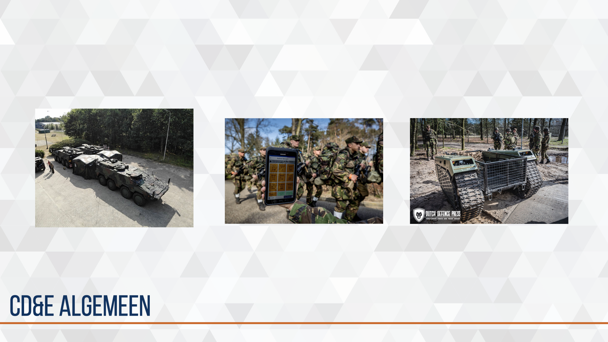
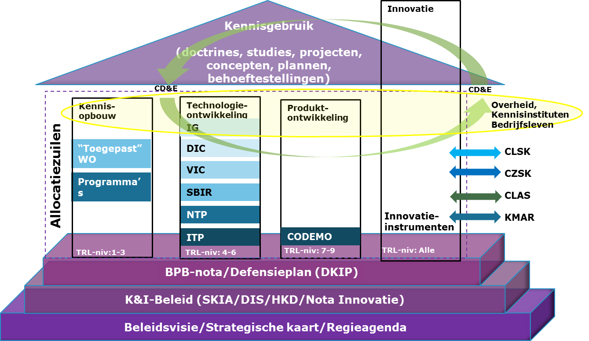
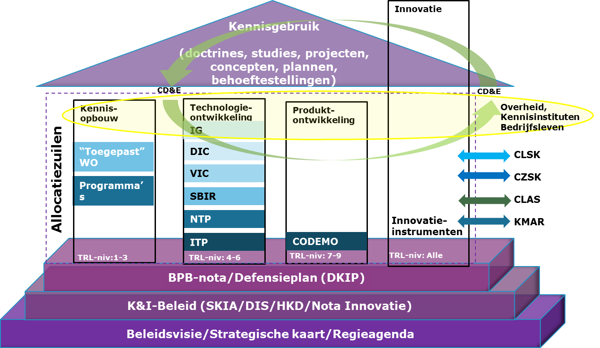
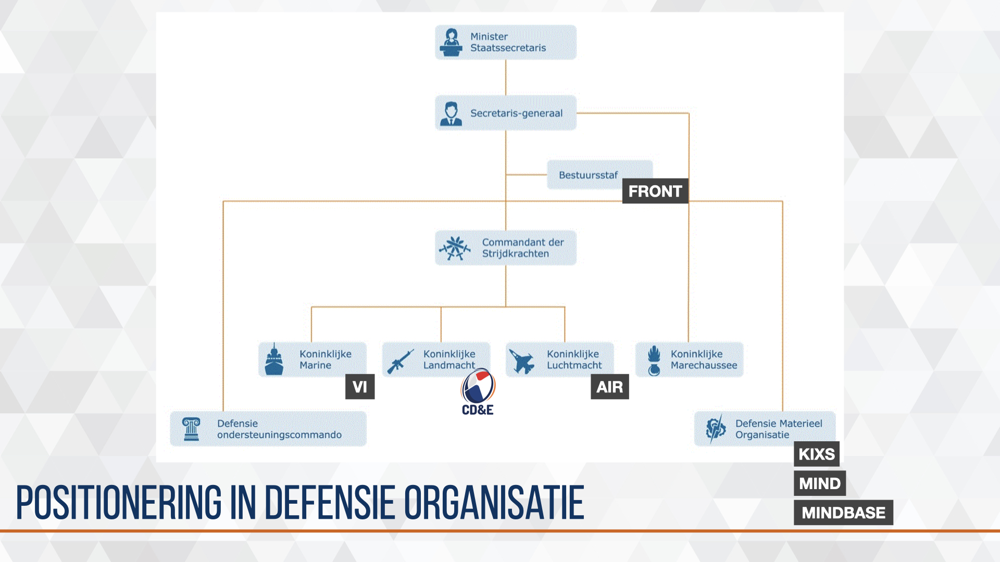
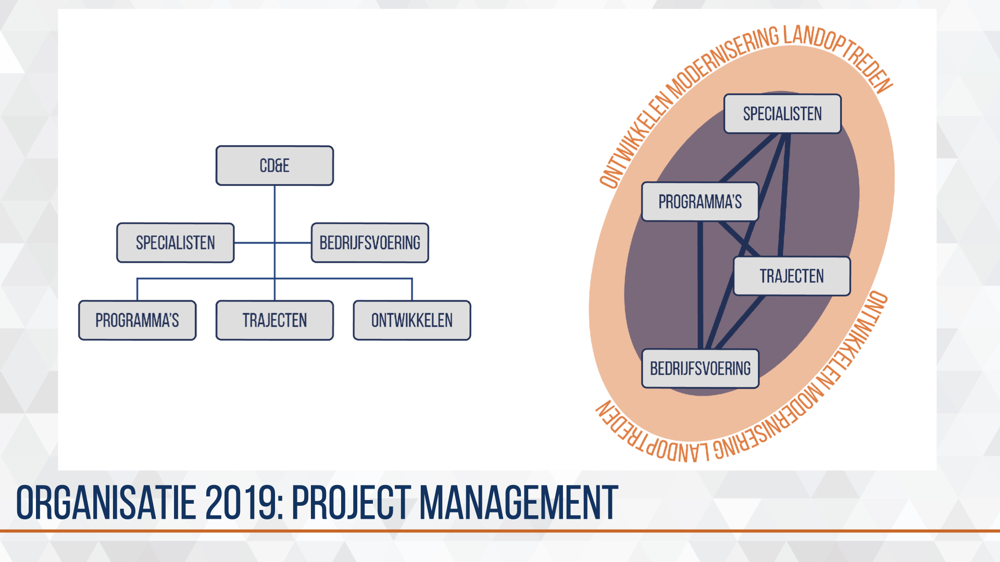
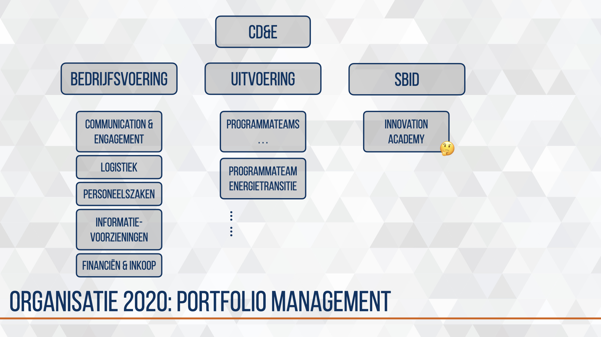

Chapter 2 CD&E algemeen {#cd&e-algemeen}

2.1 aanleiding
De reden om als Landmacht te innoveren met externe partners ligt in de realiteit dat een leger altijd beter moet zijn dan de tegenstander maar legers niet langer de innovatie aanjagen. De markt en economische marktwerking heeft dit overgenomen.
En daar waar de Landmacht het idee had de ontwikkelingen voldoende te kunnen volgen, kreeg de Commandant Landstrijdkrachten de spiegel voorgehouden door de voorzitter/directeur van werkgeversorganisatie FME-CWM tijdens de Future Force Conference in 2015.
2.2 missie
De missie van CD&E is het enige wat sinds 2017 stand houdt alle andere zaken zijn door de groei, successen (en mislukkingen) en de omgeving verandert, verbeterd of doorontwikkeld. > CD&E ontsluit het innovatieve vermogen van het bedrijfsleven en kennisinstituten voor het moderniseringsproces van de Land- en/of Krijgsmacht zodat onze eenheden tijdens inzet relevant en waar nodig dominant blijven.
2.3 beleid
 Er zijn een aantal beleidsdocumenten die het moderniseren en innoveren van de Land- en Krijgsmacht sturen. Drie documenten zkomen met enige regelmaat terug. De Defensievisie 2035, Vechten voor een veilige toekomst beschrijft de inrichtingsprincipes voor de eerstkomende jaren. De Strategische kennis- en innovatieagenda geeft meer thematisch aan in welke onderwerpen Defensie de focus legt. De Visie Commando Landstrijdkrachten, Veigliheid is vooruitzien, beschrijft het toekomstbeeld van de Kominklijke Landmacht. Deze is intern verder vertaald in het Operationeel kader landoptreden (OKL).
Er zijn een aantal beleidsdocumenten die het moderniseren en innoveren van de Land- en Krijgsmacht sturen. Drie documenten zkomen met enige regelmaat terug. De Defensievisie 2035, Vechten voor een veilige toekomst beschrijft de inrichtingsprincipes voor de eerstkomende jaren. De Strategische kennis- en innovatieagenda geeft meer thematisch aan in welke onderwerpen Defensie de focus legt. De Visie Commando Landstrijdkrachten, Veigliheid is vooruitzien, beschrijft het toekomstbeeld van de Kominklijke Landmacht. Deze is intern verder vertaald in het Operationeel kader landoptreden (OKL).
Als definitie voor innovatie volgt CD&E de Adviesraad voor Wetenschap, Technologie en Innovatie.
Innovatie: “de implementatie van een nieuw of significant vernieuwd product of dienst, proces, nieuwe marketingmethode of een nieuw organisatiemodel.“ (Adviesraad voor het Wetenschaps- en Technologiebeleid 2014)
2.4 uitgangspunten
Bij het ontwikkelen van een modellen en processen zijn er een aantal zaken waar de Landmacht rekening mee moet houden. Bij wet kent de Landmacht een aantal verplichtingen zoals de wijze waarop partners en leveranciers worden geselecteerd of de manier waarop geld wordt uitgegeven.
Daarnaast kent de organisatie een snelle doorstroom van functionarissen en dwingende processen en regels. Functionarissen doen wat zij kennen, weten en wat de afdeling of eenheid gewoon is te doen vanuit de intentie kwaliteit te willen leveren als vakmensen. Door de snelle doorstroom is het lastig de mogelijkheden van de wet- en regelgeving ten volle te benutten. Procedures maken de gang van zaken controleerbaar, repeteerbaar en voorspelbaar maar vooral borgt het de sociale waarden van de Landmacht als overheidsorganisatie.
Dit resulteert in drie uitgangspunten die kaderstellend zijn bij het doorontwikkelen van modellen, processen en instrumenten voor Military Design & Innovation.
Landmacht is een aanbestedende dienst
Europese wetgeving
Landmacht is een rijksoverheidsorganisatie
Ministeriële verantwoording aan parlement over verantwoorde uitgave belastinggeld
Landmacht is een bureaucratische organisatie
Door processen en regelgeving is de organisatie non-discriminatief conform Weber’s model
2.5 moderniseringsmodellen
 

Voor de lang-cyclische modernisering kent de Landmacht het CLAS moderniseringsmodel waar vanuit een future scan (landoptreden van de toekomst LvT) wordt toegewerkt naar een force design (Landmacht van overmorgen LvOM), force building (Landmacht van morgen LvM) en force employment (Landmacht van vandaag LvL).
Defensie breed is de lang-cyclische modernisering en innovatie ingericht als een ‘huis.’ Dit kennis- en innovatie model is al jaren in gebruik en voorziet in vele instrumenten en processen om innovatie op lange termijn toe te passen. Echter het gebruiken van nieuwe snel opkomende innovaties kunnen hiermee niet adequaat worden getest en geïmplementeerd.
Met CD&E werkt de Landmacht sinds 2015 aan het versnellen, verbinden en vermarkten van opkomende technologieën door het organiseren en structureren van kort-cyclische innovatie.
2.5.1 CD&E binnen CLAS-modernisering
 [fig:simpel-proces]
[fig:simpel-proces]
Figuur ?? en vereenvoudigde visualisatie van het ‘klassieke’ moderniseringsproces van de Landmacht. Dit proces kan worden onderverdeeld in vier aandachtsgebieden, de landmacht van vandaag (LvV), morgen (LvM), overmorgen (LvOM) en het landoptreden van de toekomst (LvT). Verschillende organisatie-onderdelen dragen bij aan deze aandachtsgebieden. Grofweg kan de verantwoordelijkheid (responsibility) worden toebedeeld aan respectievelijk de parate eenheid, afdeling strategie & plannen, kenniscentrum en afdeling trends & concepts. In dit proces vindt backcasting plaats doordat onderzoek, studies en verkenningen richting geven aan modernisering voor LvM en LvV en forecasting doordat evaluaties, lessons learned en experimenten richting geven aan beleid, budgettering en kennisplanning.
CD&E programma’s dragen hoofdzakelijk bij aan de landmacht van morgen en overmorgen.
2.6 positionering in defensie organisatie

CD&E is het innovatiecentrum van de Landmacht. Ook de andere defensieonderdelen kennen innovatiecentra, ieder opgebouwd in de kenmerken en cultuur van het defensieonderdeel.
2.7 organisatie 2019: multi-project management

In 2019 groeide het team dusdanig dat enige verdeling en specialisatie onvermijdelijk werd. Teams werden ingericht naar activiteiten en he niveau wat hoofdzakelijk werd gesteund. Trajecten groepeerde de trajectbegeleiders en werkte voornamelijk met de kenniswerkers (kennis- en expertise centra) en stafmedewerkers (parate eenheid). Binnen Programma’s zaten programma-managers die de kennisadviseurs en dossierhouders (afdeling Strategie en Plannen) steunde in het opzetten van routekaarten van operationele wensen en behoefte. Ontwikkelen was gericht op de strategische inbedding van alle inspanningen. Bedrijfsvoering voor alle CD&E ondersteunende processen, uitvoering evenementen en logistieke ondersteuning. De vele individuele of specifieke teamleden werden onder Specialisten geschaard.
De aanpak is een olievlekwerking. Met trajecten en programma’s voorbeelden creëren waardoor operationele en bedrijfsmatige knelpunten zichtbaar worden zodat deze geadresseerd kunnen worden bij de juiste entiteiten. Dit draagt bij aan het structureel kort-cyclisch moderniseren in het landoptreden.
2.8 transitie 2020

In 2020 deden we een herijking op het project portfolio zodat de focus blijft op de juiste initiatieven. Deze herijking was een staf integraal beschouwen van projecten op relevantie, urgentie, noodzaak en realiseerbaarheid binnen het landoptreden. De herijking maakte de vele initiatieven inzichtelijk en keuzen door Directeur Kennis & Ontwikkeling mogelijk. De multi-project aanpak creeerde daarmee een vorm van overzicht, inzicht en regie. (Foto brownpaper nog toevoegen)
Het werd tijd voor de volgende stap waarin meer richting wordt gegeven aan de initiatieven vanuit ambitie, markt tempo en markt potentieel.
De programmatische aanpak was daarvoor gekozen. Programma-managers inventariseren moderniseringsinitiatieven bij de 9-14 kennisadviseurs m.b.v. Boill Sharp’s 3-horizon model en visualiseren met hiërarchie-boom-structuur.
2.9 organisatie 2020: portfolio management

In 2020 groeide CD&E uit tot een volwaardige innovatie partner, werden CD&E en DAK-C samengevoegd in een Afdeling Innovatie onder de Directie Kennis & Ontwikkeling, consolideerde het budget, werden de moderniseringsvraagstukken groter en complexer en werd zichtbaar en merkbaar voortgang geboekt met strategische inbedding.
Het was tijd om opnieuw de structuur en benadering aan te passen. Programma-management is de gekozen aanpak omdat dit planbaar en beheersbaar is in de interne bedrijfsvoering en herkenbaarheid en vertrouwen creëert in de samenwerking met externe partners (koepelorganisaties, MKB-ers, kennisinstituten). Er worden daarom hoofd-programma’s geformeerd rondom een specifiek thema, hierin zitten verschillende moderniseringsprojecten. Een programmateam met programma-managers en trajectbegeleiders werken samen aan het hoofdprogramma.
Alle programma’s komen onder uitvoering terwijl de (door)ontwikkeling en strategische inbedding worden samengebracht bij Strategic Business & Innovation Development (SBID). Er komst dus een scheiding tussen toekomst, uitvoering en ondersteuning.
2.10 CD&E middelen

De uitvoering van kort cyclische moderniseringsprojecten vindt plaats op locatie en in eigenaarschap van een kenniscentrum of parate eenheid, CD&E steunt en faciliteert. Hiervoor heeft CD&E een aantal middelen en diensten tot haar beschikking. Dit zijn de middelen en diensten die niet vanzelfsprekend toegankelijk zijn voor de betrokken partijen of vanwege schaarste of efficiëntie beter tot hun recht komen door centrale positionering.
2.10.1 experimenteer omgeving & innovatie hub

De eerste grootschalige uitvraag aan de markt heeft in 2016 plaats gevonden. Gericht op de base van de toekomst zijn de uitdagingen geschetst op de thema’s energie, bescherming, water en logistiek. Op Kamp Soesterberg is de basis van een militair kampement opgebouwd met de formele fieldlab status van Smart Industry. Dit Fieldlab Smartbase heeft de Landmacht veel ervaring en kennis opgeleverd over het proces en inhoud. Sinds september 2019 is dit fieldlab verhuist naar Complex Ede-Driesprong waar externe partners kunnen experimenteren binnen de militaire context.